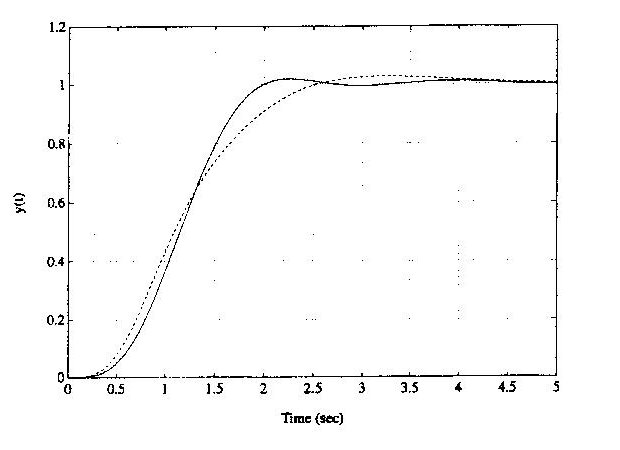
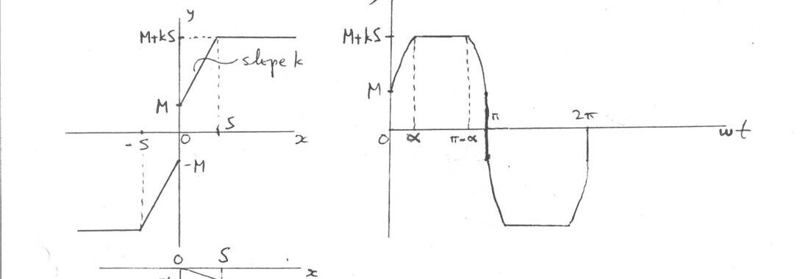

· EEM322
EEM322 Denetim Sistemleri: Dayanıklı PID Tasarımı, Kharitonov Testi ve Tanımlayıcı Fonksiyon Çözümleri (Uraz, EEM419/EEM417)
EEM322 – Denetim Sistemleri · 09.04.2015 · 16.10.2026
Bu yazı, EEM322 Denetim Sistemleri klasörünün "Control" alt klasöründe bulunan iki grup el yazısı çözümü bir araya getiriyor. İkisi de dersin öğretim üyesi Prof. Dr. Alper Uraz'ın elinden çıkma, taranmış sayfalar:
- "EEM419-Ch8-Prob" adlı klasördeki 8. bölüm problemleri (Ex. 8.7, 8.8, 8.9(c)): dayanıklı (robust) denetim. Dosya adına göre bunlar EEM419 kodlu derse ait.
- "EEM417NLDF" adlı iki sayfa: doğrusal olmayan bir elemanın tanımlayıcı fonksiyonu (describing function). Dosya adına göre EEM417 dersine ait.
Belgeler EEM322 klasöründe saklandığı için burada yer alıyor; tarihleri belgede yazmıyor. Taranmış orijinal sayfalar yazının sonunda ZIP olarak indirilebilir. (Aynı klasördeki faz portresi sayfası basılı bir ders kitabından taranmış olduğu için yayınlanmadı.)
Ex. 8.7: Belirsiz parametreli sistem için ITAE ölçütüyle PID tasarımı
Sistem yapısı: ön filtre P(s) → toplama noktası → denetleç C(s) → sistem G(s), birim geri besleme.
G(s) = K / [s(s + b)(s + 4)], K ∈ [1, 3], b ∈ [1, 3]; nominal değerler K = 2, b = 2.
İstenen: tepe zamanı Tp < 2.5 s olan ITAE (zaman ağırlıklı mutlak hata integrali) performansı.
- En kötü durum performansı K = 1 ve b = 1 ile elde edilir: G₁(s) = 1 / [s(s + 1)(s + 4)].
- Simülasyonla Tp = 2.5 s koşulunu sağlayan ω0 = 2.38 seçilir. Sıfır konum hatalı ITAE tablosundan (Tablo 7.3) dördüncü dereceden kapalı döngü transfer fonksiyonu:
T(s) = ω0⁴ / (s⁴ + 2.1ω0 s³ + 3.4ω0² s² + 2.7ω0³ s + ω0⁴) = 32.08 / (s⁴ + 5s³ + 19.26s² + 36.4s + 32.08)
- PID denetleç: C(s) = Kp + Ki/s + Kd·s = (Kd·s² + Kp·s + Ki)/s ⇒ T₁(s) = C(s)G₁(s)/[1 + C(s)G₁(s)] = (Kd·s² + Kp·s + Ki) / [s⁴ + 5s³ + (4 + Kd)s² + Kp·s + Ki]. Toplam transfer fonksiyonu T(s) = P(s)T₁(s).
- Karakteristik denklemler eşitlenir: s⁴ + 5s³ + 19.26s² + 36.4s + 32.08 = s⁴ + 5s³ + (4 + Kd)s² + Kp·s + Ki ⇒ Kp = 36.4, Ki = 32.08, Kd = 15.26.
- Ön filtre, T(s) = P(s)T₁(s) olacak şekilde: P(s) = Ki/(Kd·s² + Kp·s + Ki) = 32.08/(15.26s² + 36.4s + 32.08).

Ex. 8.8: Tasarımın dayanıklı kararlılığı (Kharitonov testi)
Ex. 8.7'deki PID ile, ön filtre olmadan kapalı döngü transfer fonksiyonu:
C(s)G(s)/[1 + C(s)G(s)] = K(Kd·s² + Kp·s + Ki) / [s²(s + b)(s + 4) + K(Kd·s² + Kp·s + Ki)]
Kp = 36.4, Ki = 32.08, Kd = 15.26 ve K ∈ [1, 3], b ∈ [1, 3] için karakteristik denklem:
Δ(s) = s⁴ + (b + 4)s³ + (4b + 15.26K)s² + 36.4K·s + 32.08K
p(s) = q₀ + q₁s + q₂s² + q₃s³ + s⁴ yazılırsa katsayı aralıkları:
| Katsayı | İfade | Aralık |
|---|---|---|
| q₀ | 32.08K | [32.08, 96.24] |
| q₁ | 36.4K | [36.4, 109.2] |
| q₂ | 4b + 15.26K | [19.26, 57.78] |
| q₃ | b + 4 | [5, 7] |
n = 4 olduğundan yalnız iki Kharitonov polinomunu test etmek yeter:
- P₁⁺⁻(s) = q₀⁺ + q₁⁻s + q₂⁻s² + q₃⁺s³ + s⁴ = 96.24 + 36.4s + 19.26s² + 7s³ + s⁴
- P₂⁺⁺(s) = q₀⁺ + q₁⁺s + q₂⁻s² + q₃⁻s³ + s⁴ = 96.24 + 109.2s + 19.26s² + 5s³ + s⁴
P₁⁺⁻(s) için Routh tablosu:
| Satır | 1. sütun | 2. sütun | 3. sütun |
|---|---|---|---|
| s⁴ | 1 | 19.26 | 96.24 |
| s³ | 7 | 36.4 | |
| s² | 14.06 | 96.24 | |
| s¹ | −11.51 | ||
| s⁰ | 96.24 |
İlk sütunda iki işaret değişimi var; genel tasarım dayanıklı Hurwitz kararlı değildir. P₁⁺⁻(s) Hurwitz olmadığı için P₂⁺⁺(s)'yi denetlemeye gerek yoktur; P₁⁺⁻(s) Hurwitz olsaydı dayanıklı kararlılığı göstermek için P₂⁺⁺(s) de denetlenmeliydi.
Ex. 8.9(c): Aralık katsayılı polinom
p(s) = (3 + q₁) + (4 − q₂)s + 21s² + (6 + 2q₃)s³ + s⁴, q₁ ∈ [−1, 1], q₂ ∈ [0, 2], q₃ ∈ [1, 2]
- Belirsizlikler katsayılarda toplanır (lumping): p̃(s) = q̃₀ + q̃₁s + 21s² + q̃₃s³ + s⁴; q̃₀ = 3 + q₁ ∈ [2, 4], q̃₁ = 4 − q₂ ∈ [2, 4], q̃₃ = 6 + 2q₃ ∈ [8, 10].
- Yani p̃(s) = [2, 4] + [2, 4]s + 21s² + [8, 10]s³ + s⁴. n = 4 için iki polinom test edilir: P̃₁⁺⁻(s) = 4 + 2s + 21s² + 10s³ + s⁴ ve P̃₂⁺⁺(s) = 4 + 4s + 21s² + 8s³ + s⁴.
- Routh tabloları: P̃₁⁺⁻ için ilk sütun 1, 10, 20.8, 0.08, 4; P̃₂⁺⁺ için 1, 8, 20.5, 2.44, 4.
- İki polinom da Hurwitz olduğundan p(s) dayanıklı Hurwitz kararlıdır.
Ex. 1(f): Tanımlayıcı fonksiyon
Doğrusal olmayan eleman: x = 0'da ±M sıçraması yapan, |x| < S aralığında eğimi k olan ve |x| ≥ S için M + kS'de doyan tek fonksiyonlu bir karakteristik (ölü bölgesiz, sıçramalı doyma).

Giriş x = X sin ωt (X > S) için çıkışın ilk yarım periyodu:
| Aralık | y(t) |
|---|---|
| 0 < ωt < α | M + kX sin ωt |
| α < ωt < π − α | M + kS |
| π − α < ωt < π | M + kX sin ωt |
burada sin α = S/X, yani α = sin⁻¹(S/X).
- Çıkış tek fonksiyon olduğundan temel bileşen y₁(t) = Y₁ sin ωt; Y₁ = (1/π)∫₀^2π y(t) sin ωt d(ωt) = (4/π)∫₀^π/2 y(t) sin ωt d(ωt).
- Y₁ = (4/π)[∫₀^α (M + kX sin ωt) sin ωt d(ωt) + ∫α^π/2 (M + kS) sin ωt d(ωt)]
- = (4/π)[M∫₀^α sin ωt d(ωt) + (kX/2)∫₀^α (1 − cos 2ωt) d(ωt) + (M + kS)∫α^π/2 sin ωt d(ωt)]
- = (4/π)[−M cos α + M + kX(α/2 − ½ sin α cos α) + (M + kS) cos α]
- = (4/π)[M + (kX/2) sin⁻¹(S/X) + (kS/2)√(1 − S²/X²)]
Verilen doğrusalsızlığın tanımlayıcı fonksiyonu:
N = (Y₁/X)∠0° = 4M/(πX) + (2k/π)[sin⁻¹(S/X) + (S/X)√(1 − S²/X²)]
N gerçel bir büyüklüktür (çıkışta faz kayması yok).